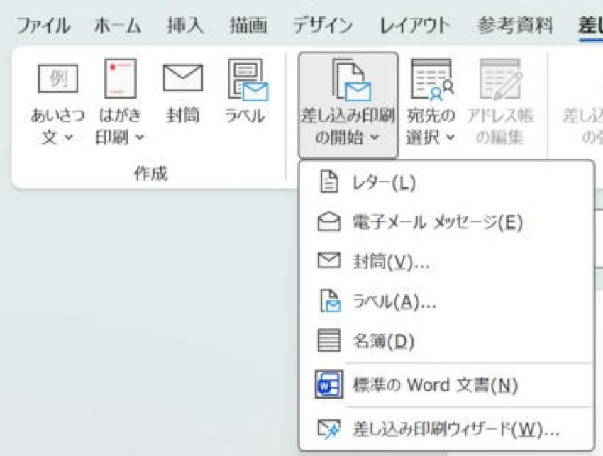
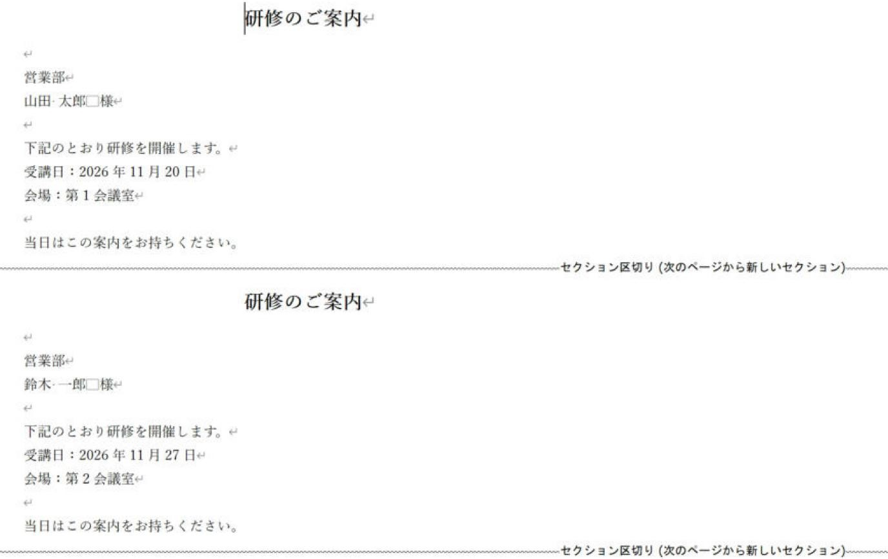
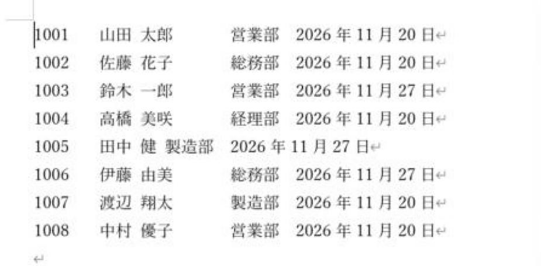
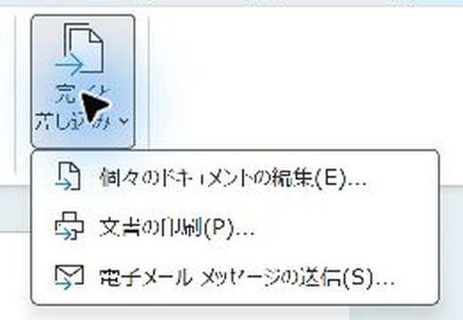

Word差し込み印刷の「レター」と「名簿」の違いと使い分け（ラベル・封筒・はがきも）
レターと名簿を、プレビューではなく完成した文書で比べます。
1人に1枚なら「レター」、1枚に全員を続けて並べるなら「名簿」です。宛名シールはラベル、封筒とはがきはそれぞれ専用の機能を使います。
入門（Lv.1）
- 2件を準備
- レターで出力
- 名簿で出力
- 並び方を比較
目次
💡 結論：ふだん使うのは「レター」
Wordの差し込み印刷は、最初に「差し込み印刷の開始」で種類を選びます。案内文・通知書・請求書・修了証のように、1人に1枚の文書を作るなら「レター」です。実務でいちばんよく使うのはこれです。
「名簿」は、1枚の中に何人分も続けて並べたいとき（一覧表、会社ごとの送付状など）に使います。宛名ラベル・封筒・はがきには、それぞれ専用の種類やウィザードがあります。

種類ごとの違い（早見表）
| 種類 | 差し込んだ結果 | 向いているもの | 手順の記事 |
|---|---|---|---|
| レター | 1人ごとに新しいページ（セクション）になる | 案内文、通知書、請求書、修了証、送付状（個人あて） | レターの流れ（絞り込み・印刷まで） |
| 名簿 | 1人分ずつ続けて並ぶ。人ごとの強制改ページはなく、用紙が埋まれば次ページへ流れる | 受講者一覧、名札用の一覧、会社ごとの送付状 | 会社ごとに1枚の送付状 |
| ラベル | ラベルの枠ごとに1人ずつ（Next Recordで次の人へ） | 宛名ラベル、名札シール、1枚に3人ずつの受講票 | 宛名ラベルの基本／1枚に複数人分 |
| 封筒 | 封筒の大きさの用紙に1人1枚 | 長形3号・角形2号などの封筒の宛名 | 長形3号の封筒に縦書きで宛名 |
| はがき（はがき印刷） | はがきの宛名面に1人1枚（郵便番号の枠付き） | 年賀状・案内はがきの宛名面 | はがき宛名面印刷 |
はがきは「差し込み印刷の開始」ではなく、同じタブの「はがき印刷」→「宛名面の作成」から始めます。
迷ったときの決め方
| やりたいこと | 選ぶ種類 |
|---|---|
| 1人に1枚ずつ、同じ文面で名前や日付だけ変えて印刷したい | レター |
| 1枚の紙に全員分を表のように並べたい（一覧） | 名簿 |
| 会社ごと・部署ごとに1枚にまとめたい（同じ会社の人を1枚に） | 名簿で会社ごとに絞って出力するか、1行1社のデータを作ってレターで差し込む（送付状の記事） |
| 1枚の紙に決まった人数（3人ずつ・10人ずつ）を枠で並べたい | ラベル（1枚に複数人分） |
| 宛名シールを作りたい | ラベル |
| 封筒に直接宛名を印刷したい | 封筒 |
| はがきの宛名面を作りたい | はがき印刷（宛名面の作成） |
名簿の差し込み・Excelのつなぎ方・フィールドの挿入・フィルター・プレビュー・差し込みの操作は、どの種類でも同じです。最初はレターで一通りの流れを覚えると、名簿やラベルにもそのまま応用できます。
レターと名簿の違いを実際の画面で比べる
同じExcelの名簿（架空の8名）を使って、レターと名簿で差し込んだ結果を比べました。
レター：1人ごとにページが分かれる
案内文に «部署» «氏名» などを入れてレターで差し込むと、1人分の文書の後ろに「セクション区切り（次のページから新しいセクション）」が自動で入り、次の人は次のページから始まります。

文書は1人分（1ページ）だけ作ればよく、人数分のページは差し込むときにWordが作ります。ふだんの案内文・通知書はこの形で足ります。
名簿：1枚に続けて並ぶ
名簿では、文書に書いた内容が1人分ずつ改ページなしで続けて差し込まれます。一覧表を作るときは、1行分だけ作ります。

- 列をそろえる：名前の長さで列がずれるときは、「ホーム」タブ →「段落」の右下のボタン →「タブ設定」で、タブの位置を文字数で決めておきます。
- 見出し行は入れない：名簿の文書に「社員番号 氏名…」の見出しを書くと、人数分くり返されます。見出しは、差し込んだ後の新しい文書に追加します。
- プレビューは1人分：名簿では「結果のプレビュー」に1人分しか表示されません。全体は差し込んだ後の文書で確認します。
自分でも確かめる：同じ2人で比べます
- Excelに2人分の架空データを入れ、保存します。
- 空白のWordで「レター」を選び、氏名と短い案内文を挿入します。
- 「個々のドキュメントの編集」→「すべて」で出力し、1人分の文面がページごとに分かれるか見ます。
- 別の空白文書で「名簿」を選び、氏名1人分と改行だけを作ります。
- 同じように「個々のドキュメントの編集」→「すべて」で出し、2人が続けて並ぶか比べます。
1人分の文面の長さでページ数は変わります。「名簿なら必ず1ページ」という意味ではありません。
「名簿」を選んだ後も、完成させる操作が必要です
「名簿」を選ぶと、1人分を続けて並べる設定になります。ただし「結果のプレビュー」は表示中の1人分を確認する画面です。
「完了と差し込み」→「個々のドキュメントの編集」→「すべて」→「OK」で、全員が続けて並んだ新しい文書を作ります。「個々の」という名前でも、全員分を出力できます。

最初から手順を追う場合はこちら：名簿差し込みを完成させる手順（ひな形・プレビュー・完成文書を実画面で比較）。
よくある質問
| 疑問 | 答え |
|---|---|
| レターで1枚に2人分入れたい | レターでも、2人目の前に «Next Record» を入れれば1枚に複数人を入れられます。決まった人数を枠で並べるならラベルのほうが作りやすいです（1枚に複数人分）。 |
| 名簿で1人1ページにしたい | 文書の最後に改ページを入れればできますが、その用途ならレターを選ぶほうが簡単です。 |
| 必要な人だけ印刷したい | どの種類でも「アドレス帳の編集」のフィルターで絞り込めます（必要な人だけ印刷する2つの方法）。 |
画面はWindows版のWord・Excel（Microsoft 365）で、架空の名簿を使って撮影しました。紙への印刷は行っていません。画面の名前や配置は、お使いの版で異なる場合があります。